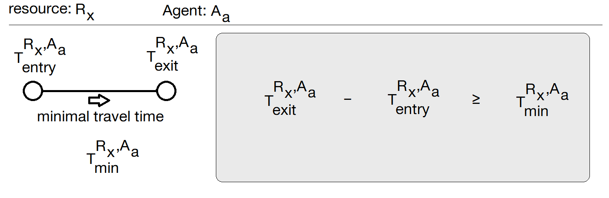
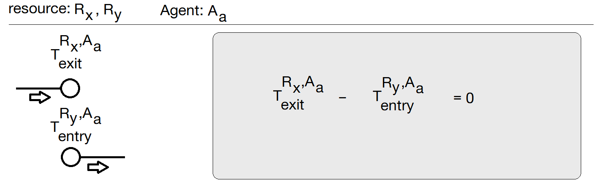
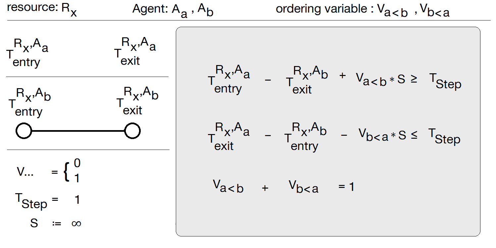
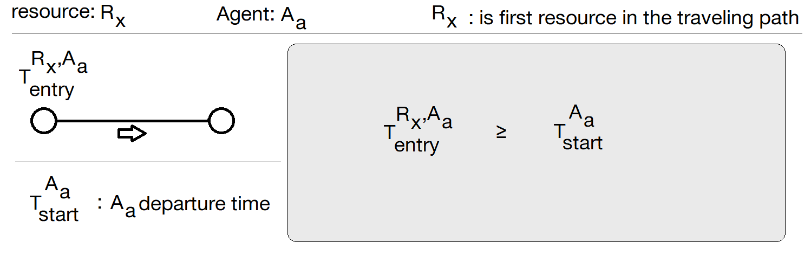
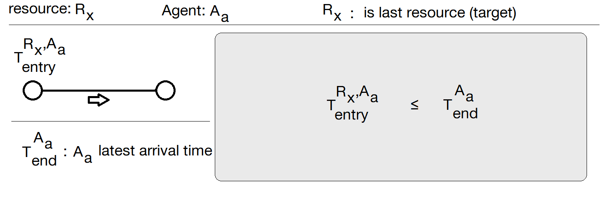
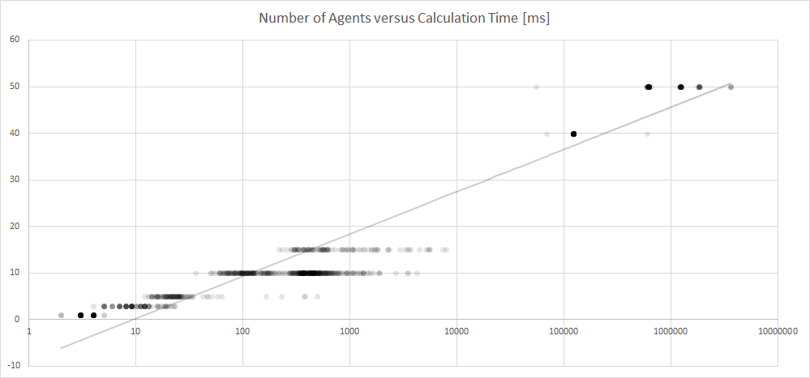

Operations Research¶
The following sections describe how solve a Flatland problem with mixed-integer programming (MIP), CP-SAT solvers problems.
It assumes that the Flatland problem can be solved by using shortes path walks only. That means for each agents the system has only to decide whether it can make one step along agent’s shortes path or not. If the problem can be solved under this assumption the problem is a simple ordering-problem. No alternative paths are required.
Dependencies¶
Install OR-Tools for Python
The fastest way to get Google OR-Tools is to install the Python binary version. If you already have Python 2.7 or 3.5+ (and the Python package manager PIP) installed, you can do so as follows:
python -m pip install --upgrade --user ortools
Getting started¶
After the installation is complete, you are ready to use the ProblemDescription. Then you need to import a
problem solver, such as the MIPSolver or the CPSATSolver.
from solver.Google_OR_Tools.cp_sat_solver import CPSATSolver
from solver.Google_OR_Tools.mip_solver import MIPSolver
from solver.Google_OR_Tools.problem_description import ProblemDescription
Next step is to create or to load from file a RailEnv environment.
env = RailEnv(...)
Once the Flatland RailEnv is available the problem to solve is defined. To solve the Flatland problem you have to
create a ProblemDescription object. The ProblemDescription first requires a solver and the reference to
the RailEnv environment (env). Then you have to define the path the agents travel along. Next you can pass the
maximum allowed steps for solving the problem (max_agents_steps_allowed).
This parameter declares how many steps an agent can use to reach the target.
The 3rd parameter (calculation_time_limit_milliseconds) is an optional parameter.
It limits the computation time for solving the MIP problem. The passed time must be in in milliseconds.
problem = ProblemDescription(solver,
env,
get_shortest_paths(env.distance_map),
max_agents_steps_allowed=(env.height + env.width) * 1.5,
calculation_time_limit_milliseconds=120000)
FLATlan main simulation loop gets executed as long as the ProblemDescription has at least one replay step left to execute.
while problem.replay_not_ended():
...
# execute one step based on the MIPSolver calculated replay_step
action_dict = problem.replay_step()
obs, all_rewards, done, _ = env.step(action_dict)
...
To check if the problem was solved just call the ìs_solved() method:
sovler.is_solved()
Example code¶
Just execute python solve_tests.py to see the MIPSolver in action. If you like to apply the MIPSolver to
many pickel files then you could use the solve_envs.py script.
Brief overview of the implement MIP formulation¶
The ProblemDescription assumes that each agents can reach the target by just walking along a fixed path without
infinitiy blocking any other agents.
The ProblemDescription uses the shortest path as the fixed path. See also get_shortest_paths method.
from flatland.envs.rail_env_utils import get_shortest_paths
The get_shortest_paths method returns a ordered list of WalkingElement. Each WalkingElement has the agent’s
current
position and direction stored. And it further contains the information of the transition form agent’s current position
to the next neighbor cell which is the next step on the shortest path. This information is stored as
a RailEnvNextAction element.
The agents must play the Flatland game according to the following rules:¶
(1) The agents have to be at least one time step in a resource.
(2) An agent can only leave a cell when he immediately enters into another cell.
(3) An agent can only leave a cell when the next cell is reachable from current cell: Thus the agent can only change a cell by using valid transition. The pre-computed path ensures this conditions, this rule will not be tested with MIP constraints.
(4) Each Flatland cell is a resource that can only be assigned exclusively to one agent at same time.
(5) Agent can not start before first simulation step.
(6) Agents must be at their destination before the maximal simulation steps are passed.
The MIP formulation of the rules can be found in the ProblemDescription class¶
Rule 1: _implement_agent_resource

Flatland supports multi-speed such that each agent can have it’s own speed (agent.speed_data['speed']). The
ProblemDescription sets the minimal travel time=np.ceil(1/speed).
Rule 2 and rule 3 _implement_agent_path_edge by connecting the right resource chain only one equation is required
to satisfy the rule 2 and 3.

Rule 4: _implement_agents_ordering_selection

One time step is required because Flatland updates all agents at same time step.
The variables V a < b controls the ordering of Agent a and Agent b at resource Rx.
If the V a < b is set to 1 then Agent a allocates resource Rx before Agent b.
The variables V b < a controls as well the ordering of Agent a and Agent b at resource Rx.
If the V b < a is set to 1 then Agent b allocates resource Rx before Agent a.
As the sum of V a < b and V b < a must be equal to 1 and as both variable only can hold 0 or 1 so
only V a < b or V b < a can be set to 1.
This result in that only one of the first two equation will be used. So variables V... is a switching variable.
V... can enable/disable one equation. The constant valued variable S is used to make one equation
fully satisfied without taking in account the other terms.
Special case: If agents don’t have speed = 1.0 which means the minimal travel time for one resource is longer than one simulation step. Otherwise one agent tries to enter the conflicting resource to early and this leads into a synchronisation issue where the solution is no longer a Flatland solution.
Rule 5: _implement_agent_earliest_start_time

Rule 6: _implement_agent_latest_arrival_time

Special case¶
If multiple agents start at the same position. The ProblemDescription assume that the agent have to be ordered along
the agents handle (index). Have a look into _implement_agents_force_index_sort.
More information¶
Example of a mixed-integer programming (MIP) with Google OR-Tools can be found following the link to the how-to.
Application example code¶
You have to import Flatland and the ProblemDescription before you can start writting your own application.
...
from flatland.envs.rail_env import RailEnv
from flatland.envs.rail_generators import complex_rail_generator
from flatland.envs.schedule_generators import complex_schedule_generator
from flatland.utils.rendertools import RenderTool, AgentRenderVariant
from flatland.envs.rail_env_shortest_paths import get_shortest_paths
...
# ----------------------------- Flatland -----------------------------------------------------------
from solver.Google_OR_Tools.cp_sat_solver import CPSATSolver
from solver.Google_OR_Tools.mip_solver import MIPSolver
from solver.Google_OR_Tools.problem_description import ProblemDescription
To generate a new RailEnv with multi-speed you can use the following code snipped. The demostration application uses the complex_rail_generator and the complex_schedule_generator as topology and Flatland problem generator.
def generate_multi_speed(env):
max_speed_time_factor = 1
speeds = [1.0, 0.5, 0.25, 0.125]
for i_agent in range(env.get_num_agents()):
speed = speeds[i_agent % 4]
env.agents[i_agent].speed_data['speed'] = speed
max_speed_time_factor = max(max_speed_time_factor, np.ceil(1.0 / speed))
return max_speed_time_factor
def create_flatland_environment(number_of_agents, width, height, seed_value):
rail_generator = complex_rail_generator(nr_start_goal=number_of_agents, nr_extra=1, min_dist=10,
max_dist=120, seed=seed_value)
schedule_generator = complex_schedule_generator()
environment = RailEnv(width=width,
height=height,
rail_generator=rail_generator,
number_of_agents=number_of_agents,
schedule_generator=schedule_generator
)
max_speed_time_factor = generate_multi_speed(environment)
return environment, max_speed_time_factor
How to bring the ``ProblemDescription``` together with the Flatland environment:¶
...
# load files
env, max_speed_time_factor = create_flatland_environment(number_of_agents, width, height, seed_value=0)
...
solver = MIPSolver()
problem = ProblemDescription(solver,
env,
get_shortest_paths(env.distance_map),
max_agents_steps_allowed=(env.height + env.width) * 1.5 * max_speed_time_factor,
calculation_time_limit_milliseconds=360000)
Once you have to MIPSolver and the Flatland environment, which describes in general a Flatland problem you are ready to replay the calculated solution.
You might test to solve the problem defined in ProblemDescription with MIP use the MIPSolver. You can alos
use the CPSATSolver to check the satisfiability.
Now you can just replay the calculated solution:
while problem.replay_not_ended():
obs, all_rewards, done, _ = env.step(problem.replay_step())
...
# you might write out the replay steps or you just render one step
...
Implement own solver¶
To implement you own solver you just need to make the AbstractSolver concrete. You have to implement the
interface methods.
Results: Flatland Challenge - Round 1 results¶
solve_envs_challenge_01_baseline.csv
Measure |
Value |
|---|---|
Fraction of done-agents |
0.999 |
Mean Reward |
-1023.928 |
Feasible solution found |
999 |
No feasible solution |
1 |
Min calculation time |
2ms |
Mean calculation time |
116s |
Median calculation time |
352s |
*) Maximal calculation time was set to 3600.
Only one scenario can not be solved without alternative paths¶
The scenario/level ./Envs/Test_9/Level_92.pkl can not be solved without using alternative to shortest path. The
solver
answers
with
No solution exists. MPSolverInterface::result_status_ = MPSOLVER_INFEASIBLE solution found.
Number of Agents vs. Calculation Time¶
The scaling of the x-axis (calculation time) is chosen logarithmically. The y-axis shows the number of agents.
The poor scaling behavior of the current MIPSolver can be get out of the chart. (The number of agents determine
the expected calculation time very well by using the formula calc_time ~ x ** num_agents) or in words
exponential increase.

The whole program can be found in solve_test.py
Author: Adrian Egli